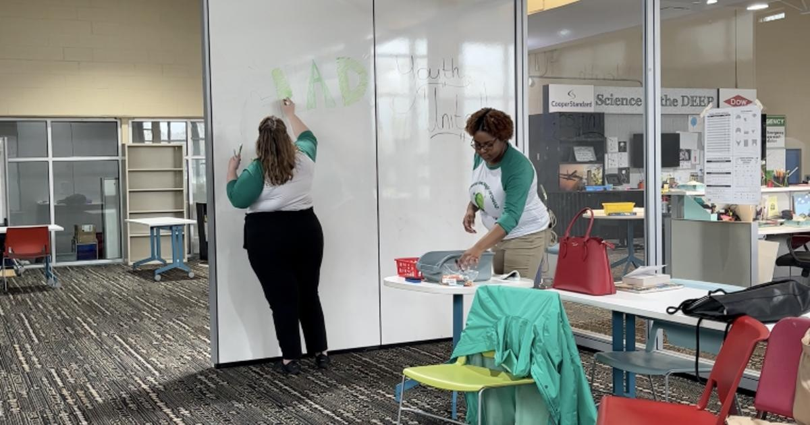

Metro Detroit groups team up to tackle youth mental health(CBS DETROIT) - The Detroit Wayne Integrated Health Network and Youth United are working on new and creative ways to get young people more comfortable talking about their mental health. It's all in an effort to be proactive, not reactive. "We're allowing all youth of all backgrounds, no matter where you come from, to come and listen to someone and a group of people to know, like, 'Hey, you're not alone at all,'" said Bianca Miles, a youth and wellness specialist with Youth United. Michigan youth are struggling with mental health issues. "There's a lot more exposure today than there used to be. Kids are overstimulated, they are burnt out, they are seeing things that, you know, due to the rapid access of the internet, maybe their peers, generations past didn't experience or witness," said Natalie Kay-Flaherty, the Northwest regional coordinator with Youth United. Youth United, a mental health resource and advocacy group with the Detroit Wayne Integrated Health Network, wants to help young people sort through their emotions in a comfortable setting with leaders who look more like them. "I feel as though the youth that we're interacting with on a daily basis feel that they can be vulnerable with us. Because we were kind of just in their shoes, right? Like, I feel like I was just in high school, and I'm getting ready to graduate with my master's. So it's that weird time slip factor, where it's like, 'Wait a minute, I should be a teenager still, but I'm not.' And now, I feel as though I can kind of fill that role as like an older sister, or like a mentor and friend who, you know, will guide you in positive ways, but also won't condemn you if you make mistakes," said Kay-Flaherty. The hope is to meet the younger generation where they are. And guide the youth to where they need to be. "I would also say to not be afraid when going forth in trying to find support. Because I think that that goes hand in hand with stigma and that isolation and that quietness that somebody may not want to show that there's something wrong. You had to kind of get over that piece and know that it's okay to struggle with your mental health and that there are resources and help out there," Kay-Flaherty said. Young people can also text 313488 for immediate mental health support. They can receive immediate support or be connected to other mental health resources in their area. Youth United is holding a mental health carnival at Say Detroit Play Center on Saturday, May 6. There will be games, rides, cotton candy and a magic show. The goal is to show that talking about mental health can be fun, while also normalizing the discussion in a social setting. for more features. |
 |